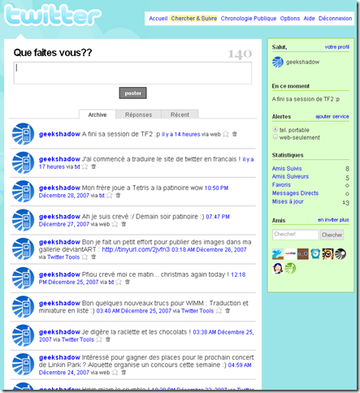

31 décembre 2007
Traduction de Twitter en français !
[note]Mise à jour le 09 Octobre 2009 :
Twitter sera disponible en Français très bientôt...[/note]
Voila depuis quelque temps je cherchait un moyen assez simple de traduire des sites internet et j'ai finalement trouvé.
Il existe une extension pour Firefox qui s'appelle Greasemonkey et qui permet de modifier des pages Web à la volée, en remplaçant du texte, en ajoutant du contenu...
J'ai donc commencé à traduire le site Twitter en Français ;)
Voici un petit aperçu : (Vous pouvez lire la capture d'écran en attendant)
Quand la traduction sera terminée, je la diffuserai via mon site en attendant une traduction officielle de la part de Twitter.
Pour télécharger l'extension Greasemonkey, rendez vous ici.
Si vous n'avez toujours pas installé Mozilla Firefox, c'est par ici.
En attendant, bon réveillon :p !

Commentaires 16